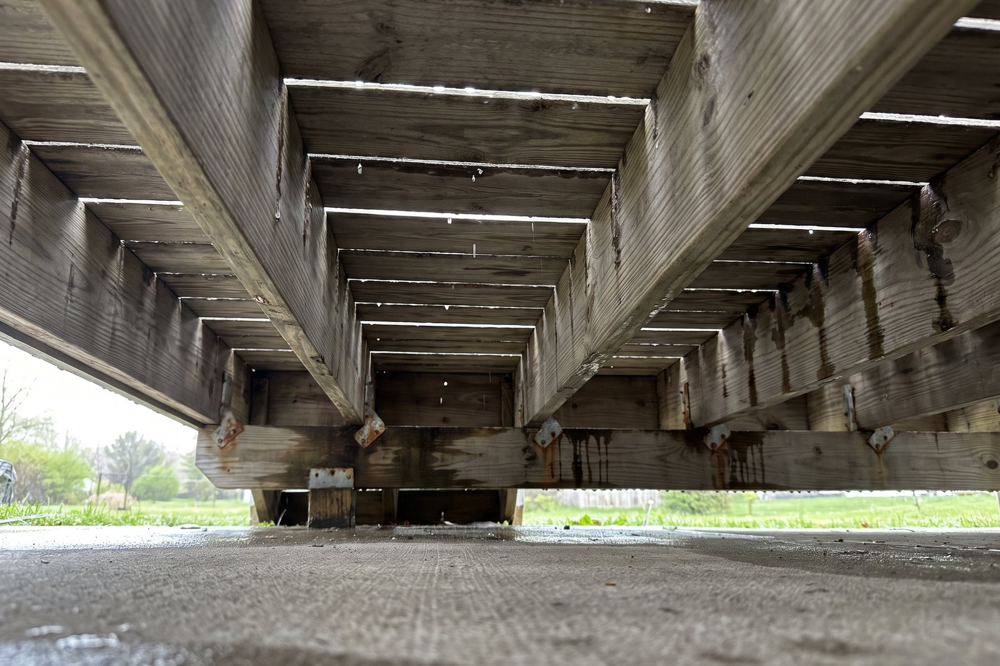

If you already own a deck and you want the space underneath to be dry and usable, the first thing worth knowing is that not every dry-space approach is available to you. Where a system sits determines whether it can be added later. Some can be. An above-joist seal cannot, and the reason is mechanical rather than commercial. This is the answer we give on the phone, so it may as well be written down.
The short answer
AmeriDex cannot be added to deck boards that are already installed. The Dexerdry component is not a strip you push into a finished deck. It is a seal with stacked barbs that embed into channels routed into the edges of the deck boards themselves, and each board gets compressed onto that seal, joist by joist, as the surface goes down. Once the boards are fastened and the surface is complete, there is no way to introduce the seal into it. That is true regardless of the condition of your deck or how much you would like it to work.
The seal lives inside the deck surface, which means it can only go in while that surface is being built.
Why some systems retrofit and this one does not
It comes down to which side of the framing the water gets stopped on. A below-joist system is a tray, panel, or membrane hung underneath the joists. Because it never touches the deck surface, it can be added at any point in a deck's life. It catches water after that water has already run over and through your framing, so it makes the space below usable while leaving the structure exposed on every storm. An above-joist seal works higher up, inside the surface, closing the gap between boards so rain sheds off the top and the framing never gets wet at all. That position is what makes it protect the structure, and it is the same position that makes it impossible to retrofit. We cover the tradeoff in the above-joist vs below-joist buyer's guide, and the underlying failure mechanism in why decks rot from the top down.
The one path that can work: a re-deck
There is a middle option between living with what you have and demolishing everything. In a re-deck, the old boards come off, the framing stays, and AmeriDex boards and Dexerdry go down on the existing structure. When the framing qualifies, this is the most cost-effective way to get a true dry space on a deck you already own, because you are paying for a surface rather than a surface plus a substructure.
The word doing the work in that sentence is qualifies. The system has requirements that most existing decks were never built to meet, and two of them are framing-level.
The two measurements that decide it
Pitch. Dexerdry decks require 1/8 inch per foot of slope for proper runoff, and where the boards run perpendicular to the house that pitch has to fall away from the house, per the Dexerdry installation instructions. This is the one that stops most re-decks. A deck that sheds water off its surface has to be built to drain, and the majority of existing decks were framed dead flat because water was always expected to fall through the gaps. Put a level and a tape measure on yours before you plan anything else.
Overhang. Every board has to overhang the outside of the framing by 1 3/8 inches. That overhang is what creates the umbrella effect that throws water clear of the structure instead of letting it run back along the underside. Existing joists are typically cut for a flush edge or about a one inch overhang, which means the joist ends and fascia usually need rework to hit the dimension.
A re-deck is worth pricing
- Framing already pitches 1/8 inch per foot, or can be corrected
- Joists are sound with no soft spots or rust bleed
- Joist ends and fascia can reach a 1 3/8 inch overhang
- Ledger flashing is intact or can be redone properly
- You want the structure protected, not just covered
Rebuild instead
- Deck is framed flat and cannot be re-pitched economically
- Joists are soft, cracked, or actively rotting
- Ledger has been leaking into the rim joist for years
- Framing is near the end of its service life anyway
- Reworking the structure approaches the cost of new
Checking your own deck in twenty minutes
Before you call anyone, gather four data points. Set a level on the deck surface running away from the house and measure the drop across a known distance to work out whether you have 1/8 inch per foot. Get underneath with a flashlight and press a screwdriver into the tops of the joists, especially any dark or stained areas, because sound wood pushes back and rotted wood takes the tip with almost no pressure. Look at the joist hangers and lag bolts for rust bleed, the vertical streaks that show water has been sitting on the metal for years. Then check the flashing where the deck meets the house, since flashing that is loose, curled, or missing means water has been running into your rim joist for a long time.
Those four answers tell you which conversation you are actually having. Sound framing with correctable pitch points to a re-deck. Compromised framing or a deck built flat with no economical way to re-pitch it points to a rebuild, where the pitch, overhang, and flashing all get designed in from the start instead of retrofitted around.
A few other requirements worth knowing early
- Top-mount fasteners only. Hidden fastener clips cannot be used with Dexerdry, since the seal occupies the same board groove the clips would use. Products like Cortex or Starborn give the hidden look instead, per Dexerdry.
- Ledger flashing comes first. On perpendicular installs the ledger and several inches of wall above it get flashed before any decking goes down, which on an existing deck usually means pulling siding back.
- No full picture frame. A full picture frame dams water at the board ends and voids the warranty. A Dexerdry Picture Frame detail gives the look while still shedding water.
- Exterior only. The system is not intended for use over interior living space.
AmeriDex cannot be added over boards that are already down. If your framing is sound and pitches 1/8 inch per foot, a re-deck can put a true dry space on the structure you already own. If it does not, that is a rebuild conversation, not a retrofit one.
Find out where your deck stands
Pitch and joist condition are hard to judge from a photo, and they are the two things that decide whether a re-deck is even on the table. Start a free quote and tell us the deck's age, how the boards run relative to the house, and what you measured for pitch, and we will tell you honestly whether you are looking at a re-deck or a rebuild. Request free samples if you want to see and feel the boards and the Dexerdry seal first, and how the system works shows how the two components lock together.